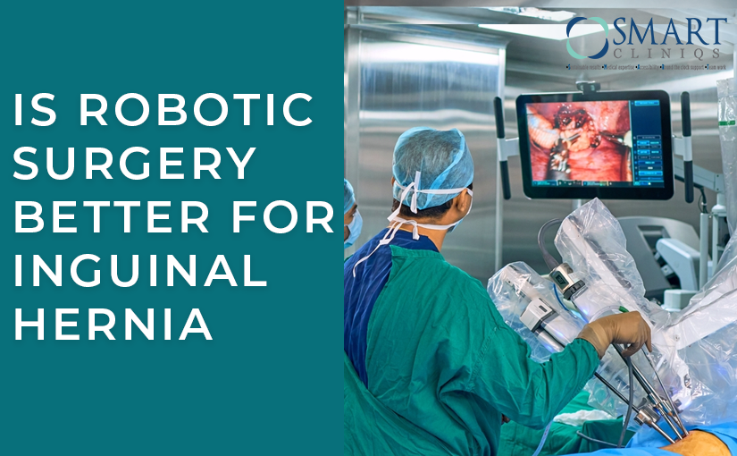

Surgery is never easy. Even when it’s labeled "routine," like inguinal hernia repair, your body still considers it an invasion; it rallies the troops—your immune system, your blood cells, your tissues—to patch up what’s been cut, stitched, and sealed. But while the surgical procedure gets all the spotlight, the real magic of healing unfolds quietly in the days that follow. And food? That’s the scriptwriter of that quiet magic.
If you're wondering what to eat after inguinal hernia surgery, you're asking one of the most important questions for your recovery. Your post-surgery diet isn't just about avoiding pain or discomfort; it’s about giving your body the right tools to repair itself from the inside out. That’s where knowing the Best food to eat after inguinal hernia surgery comes in — not gourmet fare, not exotic health trends, but simple, nourishing meals that keep your gut calm and your healing on track.
Understanding Inguinal Hernia

An inguinal hernia is one of the most common types of hernias, especially in men. Simply put, an inguinal hernia happens when a portion of tissue—usually part of the intestine—pushes through a weak spot in your lower abdominal wall, specifically the inguinal canal. This canal is a passage in your lower abdomen that both men and women have. However, it’s more structurally vulnerable in men due to the descent of the testicles during fetal development.
Now, imagine your abdominal wall as a sturdy piece of cloth. Over time, wear and tear can create a hole in that fabric. That hole allows your internal organs, like a loop of intestine or fat, to slip through. That’s an inguinal hernia.
Fortunately, inguinal hernias are highly treatable with surgical repair. Whether it’s open surgery or minimally invasive laparoscopic or robotic surgery (especially if performed by the Best Hernia Surgeon in Delhi), the goal is to push the herniated tissue back in and reinforce the weak spot with mesh or sutures.
Why Diet Matters After Inguinal Hernia Surgery
Let’s not romanticize recovery. After an inguinal hernia repair, you’re not going to bounce back like a Marvel superhero unless you fuel your body with the right ingredients. The internal stitches need support from the inside, and food is your frontline soldier. A good post-surgery diet can help:
- Prevent constipation and straining (a common cause of hernia recurrence)
- Maintain a healthy weight
- Strengthen tissues and muscles
- Reduce inflammation and pain
- Speed up wound healing
Best Food to Eat After Inguinal Hernia Surgery

You’ve made it past the surgery, the anesthesia fog has lifted, and you’re finally back home. But before you start daydreaming about your next spicy biryani or deep-fried samosa, pause. Your digestive system has just been through trauma. Even if the surgery was minimally invasive, your gut needs a gentle restart.
So, what is the best food to eat after inguinal hernia surgery?
Here’s a list of recovery-friendly foods to start with:
- Clear liquids (first 1–2 days): Think vegetable broth, coconut water, rice water, and clear soups. These keep you hydrated and help the digestive system wake up gently.
- Soft foods (day 2–5): Khichdi, plain porridge (daliya), curd rice, boiled potatoes, mashed banana, and oatmeal. These are easy to digest and won’t irritate your bowels.
- Fiber-rich foods: Once digestion stabilizes, include applesauce, papaya, steamed carrots, moong dal, and whole wheat toast. Fiber prevents constipation, which is crucial because straining can tear healing tissues.
- Lean proteins: Eggs, tofu, paneer, soft-cooked lentils, or grilled fish (if non-veg). These help rebuild tissue and muscles.
- Probiotics: Curd, buttermilk, or probiotic drinks support gut health, especially if you were on antibiotics during or after surgery.
Avoid oily, spicy, and gas-producing foods (like rajma, chole, or cabbage) for the first couple of weeks. Also, steer clear of red meat, processed snacks, and sugary desserts.
Hydration: The Unsung Hero of Recovery
You may be obsessing over what to eat, but what you drink is just as important. Staying properly hydrated might be the simplest yet most overlooked part of post-surgical recovery.
Dehydration can slow down wound healing, cause muscle cramps, and most dangerously in this case, lead to constipation. That’s a nightmare after hernia surgery, where any kind of straining is the enemy. If you're serious about healing, hydration must become a conscious habit.
Here’s how to stay ahead of the game:
- Start your day with warm water — it soothes the gut and prevents early morning constipation.
- Coconut water and ORS solutions can help replenish electrolytes lost during the operation or through reduced food intake.
- Buttermilk and lemon water are light on the gut and aid digestion.
- Herbal teas like chamomile or ginger tea reduce bloating and inflammation.
Keep a bottle nearby and sip often. Avoid fizzy drinks, packaged juices, or caffeinated beverages like colas or energy drinks—they dehydrate you and can irritate your stomach.
Foods to Avoid After Inguinal Hernia Surgery

You’ve just had abdominal surgery. That means any food that causes gas, bloating, acidity, or constipation is not your friend right now. Even the strongest mesh can’t help you if your intestines are staging a protest.
Knowing what to eat after inguinal hernia surgery is half the game, but avoiding the wrong foods is just as important to prevent unnecessary pressure on your stitches and internal tissues.
Here’s a rogue’s gallery of what to skip in the first 2–3 weeks:
- Spicy and oily foods: Say goodbye to that extra mirchi tadka and your beloved samosas, for now. These irritate your gut and slow down healing.
- Heavy, fatty meats: Red meat is difficult to digest and can sit in your stomach like a brick.
- Carbonated drinks: Soda, cola, beer—anything with bubbles causes bloating and can exert pressure on the surgical area.
- Gas-producing foods: Onions (raw), garlic, cabbage, cauliflower, rajma, chole, and besan-based dishes may cause abdominal distension and pain.
- Processed and junk food: Chips, cookies, ready-to-eat meals, and sugar-loaded desserts provide no real nutrition and may even cause constipation.
Role of Fiber in Preventing Post-Surgical Constipation
If there’s one word you’ll hear again and again after surgery, it’s this: Constipation. It’s not glamorous, but it’s critically important.
Post-surgical constipation is very common due to anesthesia, reduced movement, and painkillers (especially opioids). The last thing you want is to strain while passing stools — that strain can stress the surgical site, delay healing, or worse, cause a recurrence of the hernia.
That’s why the Best food to eat after inguinal hernia surgery includes plenty of dietary fiber.
There are two types of fiber:
- Soluble fiber: Found in oats, bananas, apples, and lentils. It dissolves in water and forms a gel-like substance that softens stool.
- Insoluble fiber: Found in whole grains, wheat bran, and most vegetables. It adds bulk to your stool and helps it move through the digestive tract.
You need both, but in moderation. Start slowly; too much fiber too soon can lead to gas and bloating. Gradually include the following:
- Mashed bananas and papaya
- Cooked oats or dalia
- Soft-cooked moong dal
- Boiled carrots and spinach
- Apple without the skin
- Brown rice (in small portions)
Meal Plan Ideas for the First Week After Inguinal Hernia Surgery
After hernia surgery, you’re not just healing a cut—you’re helping your body reinforce its walls. The best food to eat after inguinal hernia surgery should be gentle, nutritious, and zero-risk in terms of triggering bloating or constipation.
Here’s a sample 7-day meal guide for someone recovering at home. This isn't rigidly prescriptive, but it’s a helpful blueprint:
Day 1–2 (Liquid and Semi-Liquid Diet)
- Breakfast: Warm water with a teaspoon of honey + clear vegetable broth
- Mid-Morning: Coconut water
- Lunch: Moong dal ka pani (strained lentil broth) + rice water (kanji)
- Evening: Lightly salted buttermilk
- Dinner: Apple puree or plain soup
Day 3–4 (Soft Solids)
- Breakfast: Soft-cooked oatmeal with banana mash
- Mid-Morning: Papaya cubes or applesauce
- Lunch: Khichdi (rice + moong dal) + a spoon of ghee
- Evening: Curd with roasted jeera powder
- Dinner: Boiled potato mash with soft-cooked spinach
Day 5–7 (Introducing Light Solids)
- Breakfast: Dalia with boiled carrots
- Mid-Morning: One boiled egg (if non-veg) or paneer cubes
- Lunch: Steamed rice, soft-cooked tur dal, and boiled veggies
- Evening: Herbal tea + digestive biscuit
- Dinner: Soft phulka + vegetable stew
Tips for each day:
- Eat small meals 5–6 times instead of three large meals
- Chew slowly, and don’t lie down immediately after eating
- Keep sipping water throughout the day
When to Consult Your Surgeon About Diet Issues
Let’s not pretend everything always goes according to plan. Even with the best intentions and the most wholesome foods, sometimes your body resists. And when it does, you shouldn’t wait for Google to solve it — you need a consultation with Dr. Atul Peters.
Here are signs that your post-surgical diet needs a doctor’s intervention:
- Constipation lasting more than 3 days, despite fiber and fluids
- Severe bloating or stomach cramps after eating even soft foods
- Persistent nausea or vomiting
- Difficulty passing gas or stools
- Unexpected weight loss or loss of appetite for over a week
- Pain or swelling around the surgical site after meals
These aren’t just digestive complaints—they could be signs that your intestines are struggling, or worse, that a complication is developing. While rare, such issues need prompt attention.
Expert Inguinal Hernia Surgery by Dr. Atul Peters!
Contact Now!
Book Your Appointment
Conclusion
Recovery after inguinal hernia surgery isn’t just about a neat incision and a follow-up visit. It’s about what you do every day — and more precisely, what you put on your plate. Your body has been stitched, stapled, and patched up. Now, it needs the right fuel to seal the deal.
Knowing what to eat after inguinal hernia surgery can mean the difference between a smooth, speedy recovery and weeks of bloating, constipation, and unnecessary pain. While it's tempting to jump back into your regular food habits, doing so too quickly can compromise the healing process, and in worst cases, lead to a recurrence.
Frequently Asked Questions
Q1. Can I eat normal food after hernia surgery?
Not immediately. For the first few days, stick to clear liquids and soft foods. Gradually reintroduce solid, home-cooked meals over the next 2–4 weeks.
Q2. Is milk good after inguinal hernia surgery?
Yes, but opt for warm, low-fat milk and monitor for any signs of bloating or gas. Curd and buttermilk are often better tolerated.
Q3. What is the best food to eat after inguinal hernia surgery for faster healing?
Khichdi, curd rice, moong dal, soft-cooked oats, bananas, papaya, and boiled veggies are ideal. They're easy to digest and help prevent constipation.
Q4. When can I eat spicy food after surgery?
Wait at least 3–4 weeks before reintroducing spicy or oily foods, and only if there are no complications or discomfort.
Q5. How can I prevent constipation after hernia surgery?
Drink plenty of water, eat fiber-rich foods like oats, fruits, and vegetables, and go for short walks daily.